Qrimyothe – Mormors munkar 🍩120 min · 20 portioner
Mamma berättar om mormors kärlek i varje tugga ♥️ Det här receptet på Qrimyothe är mer än bara ingredienser – det är ett stycke historia från mitt hem, min kultur och framför allt från mitt hjärta.
Ingredienser
Huvudingredienser
- 7 dl varmt vatten (minst 40°C)
- 1 paket torrjäst (ca 12 g)
- 2 msk socker
- 1 msk salt
- 16 dl vetemjöl (ca 960 g)
- Olja till fritering
Tillagning
Förbered degen
- Häll det varma vattnet i en stor bunke.
- Tillsätt socker och torrjäst. Rör om och låt stå i 10 minuter tills det börjar bubbla.
- Tillsätt salt och sedan mjölet lite i taget under omrörning.
- Knåda degen tills den blir jämn och elastisk – ca 10 min för hand.
Jäsning
- Täck bunken med plastfolie eller bakduk.
- Låt degen jäsa i 1–1,5 timme på en varm plats tills den fördubblats.
Forma & fritera
- Häll lite olja på händerna, ta små bitar och forma till bollar eller ringar.
- Hetta upp olja till ca 180°C i en djup kastrull.
- Fritera tills gyllenbruna – vänd för jämn färg. Låt rinna av på papper.
Servering
- Servera som de är eller pudra med florsocker.
- Ringla sirap eller servera med glass, hallon och mynta 😍
Tips
- Degen ska vara mjuk – tillsätt mer mjöl om klibbig
- Oljans temperatur är avgörande – 180°C ger bäst resultat
- Traditionellt med socker eller honung
- Förvaras i lufttät behållare 2–3 dagar
- Uppvärmda i ugn blir de extra goda
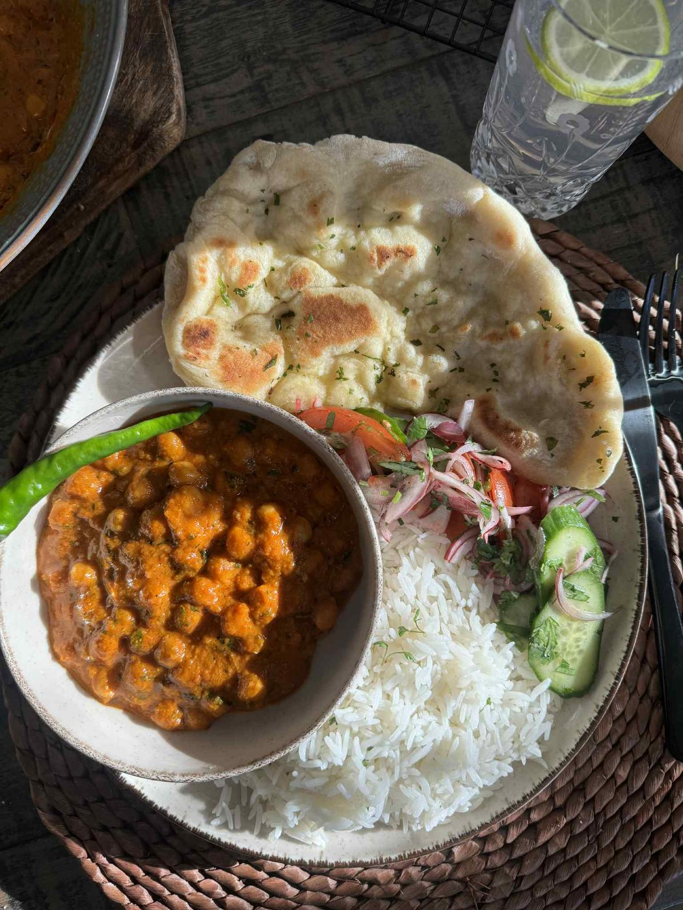
Den krämigaste kikärts tikka masalan 🤯🔥20 min · 4–6 portioner
En gryta som kramar om både hjärta och smaklökar. Fullproppad med kryddor och värme, klar på bara 20 minuter. Helt vegansk – men så god att ingen märker det 😊
Ingredienser
Huvudingredienser
- 1 gul lök, finhackad
- 3 vitlöksklyftor, finrivna
- 390g krossade tomater
- 5 dl vatten
- 2 × 380g kikärtor (avrunna och sköljda)
- 350g kokosmjölk
- Rapsolja till stekning
Kryddor
- 1 msk salt
- 1 msk lökpulver
- 1 msk paprikapulver
- 1 tsk chiliflakes
- 1 msk malen ingefära
- 1 msk spiskummin
- ½ msk malen koriander
- 1 msk gurkmeja
Tillagning
- Hetta upp rapsolja i en kastrull. Fräs löken tills mjuk och gyllene.
- Tillsätt vitlöken och fräs en kort stund.
- Häll i krossade tomater och vatten. Sjuda under lock ca 10 min.
- Blanda ner alla kryddor och låt dem fräsa med.
- Rör ner kikärtor och kokosmjölk. Sjuda på låg värme 10 min.
- Servera med ris, naan eller som den är.
Tips
- Extra gott med nybakat naan
- Mixa hälften av kikärtorna för ännu krämigare konsistens
- Smakar ännu bättre dagen efter
- Kan frysas i 3 månader
- Servera med basmatiris eller quinoa
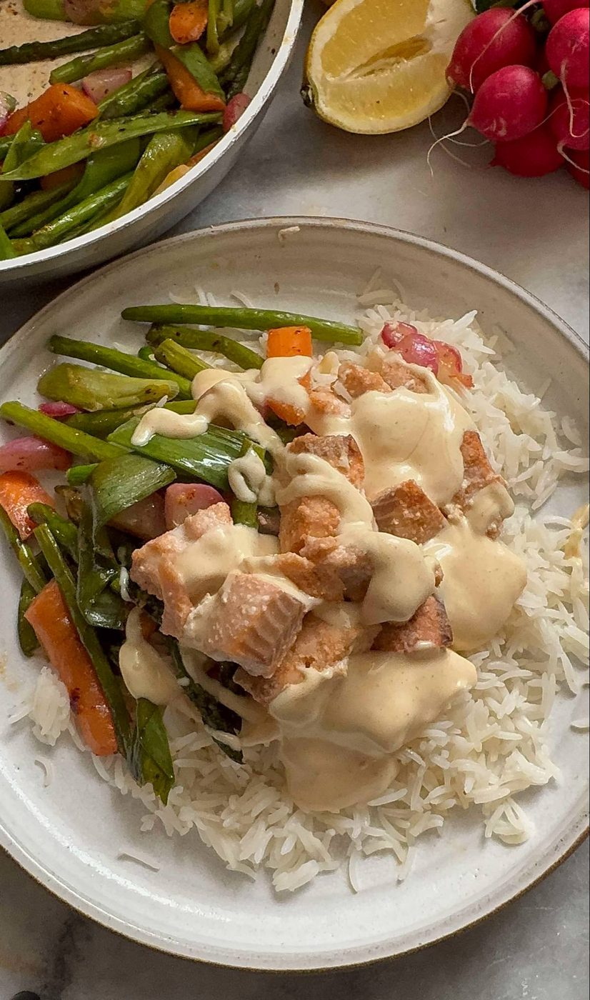
Kryddig lax- & risbowl45 min · 4 portioner
Perfekt som fräsch vardagsmiddag eller lyxig lunch. Snabbt, enkelt och smakrikt – du vill göra den här om och om igen!
Ingredienser
Laxen
- 500g färsk laxfilé
- 1 tsk salt
- ½ tsk cayennepeppar
- 1 tsk vitlökspulver
Riset
- 3 dl basmatiris
- 6 dl vatten
- 1 tsk salt
Primörgrönsaker
- 1 bunt sparris
- 1 påse mini morötter
- 3–4 salladslökar
- 5–6 rädisor
- 1 paket sockerärtor
- 1 vitlöksklyfta
- 1 tsk havssalt
- 1 krm chiliflakes
- Rivet skal från ½ citron
- 1 msk olivolja
Honungs- & senapsmajonnäs
- 1 dl majonnäs
- 2 tsk dijonsenap
- 1 tsk honung
- 1 krm cayennepeppar
- Saft från ½ citron
Tillagning
Tillagning
- Skär laxen i kuber och krydda med salt, cayenne och vitlökspulver. Tillaga i ugn 180°C i ca 15 min.
- Koka riset: skölj, koka upp med saltat vatten, sänk värmen och sjuda 10 min.
- Blanda majonnäs, dijonsenap, honung, cayenne och citronsaft till en slät sås.
- Skär grönsakerna och fräs snabbt i olja med vitlök, salt, chili och citronzest.
- Fördela ris i skålar, toppa med grönsaker och lax, ringla över såsen.
Tips
- Byt lax mot tofu för veganskt alternativ
- Förbered grönsakerna i förväg
- Servera med extra citronklyftor
- Avokado och marinerad rödlök passar också bra
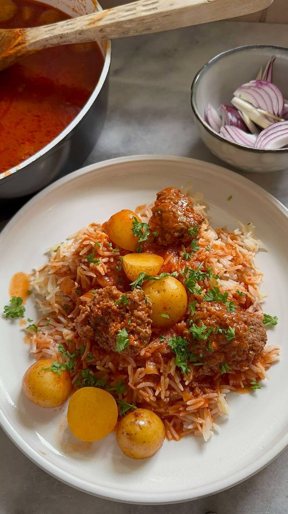
Kafta bil sejnie – Köttbullar i tomatsås60 min · 5–6 portioner
En traditionell rätt från Mellanöstern med saftiga köttbullar och potatis i en smakrik tomatsås.
Ingredienser
Biffarna
- 450g nötfärs
- 1 liten gul lök, finskuren
- ½ liten gul paprika, finskuren
- Näve persilja
Tomatsåsen
- Stekta biffarna
- 450g delikatesspotatis
- 1 liter vatten
- 3 msk tomatpuré
- 3 msk kalvbuljong
- 1 tsk chiliflakes
- 1 nypa havsalt
- 1 tsk koriander
Tillagning
Tillagning
- Blanda färs med grönsaker, forma till bollar och platta ut i handen.
- Stek lätt i olja.
- Tillsätt vatten och tomatpuré.
- Halvera delikatesspotatisarna och lägg i grytan.
- Tillsätt buljong och krydda med chiliflakes, salt och koriander.
- Lägg på lock och låt koka klart.
- Servera med ris och vermicellinudlar.
Tips
- Autentiskt med ris och vermicellinudlar
- Justera chiliflakes efter smak
- Kan förberedas dagen innan
- Spiskummin i färsen ger mer smak
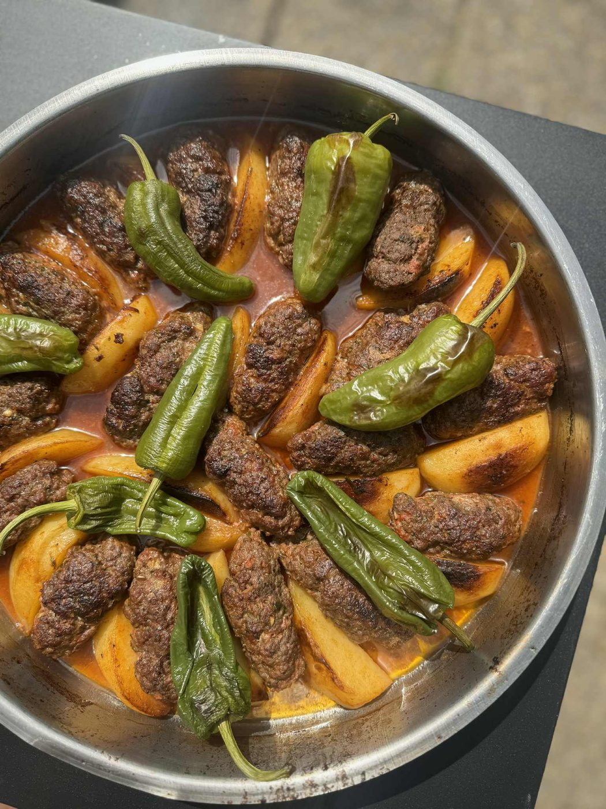
Köfta bil Sanieh60 min · 8 portioner
Mellanösterns vardagsfavorit med smak av hem. Kryddig köttfärs, potatis och padron paprika i mustig tomatsås.
Ingredienser
Köftabiffarna
- 1 kg nötfärs (10–15% fetthalt)
- 2 salladslökar, finhackade
- 1 knippe persilja, finhackad
- 3 vitlöksklyftor
- 3 msk olivolja
- 1 msk salt
- 1 tsk svartpeppar
- 1 tsk garam masala
Grönsaker
- Ca 4 fasta potatisar, skalade och klyvade
- 5–6 padron paprika
Tomatsås
- 3 dl vatten
- 1 msk tomatpuré
- 1 tsk lökpulver
- 1 tsk salt
- 1 tsk chiliflakes
Tillagning
Förbered järparna
- Hacka lök, vitlök och persilja fint. Blanda med olivolja och kryddor. Knåda in i färsen och forma till järpar.
Förstek potatisen
- Halvstekvpotatisskivorna i olja tills gyllenbruna men ej genomstekta.
Stek järparna
- Snabbstek 1–2 min per sida för smak och form.
Grädda
- Varva järpar och potatis i ugnsform. Häll tomatpuré och vatten över – krydda väl.
- Baka 250°C ca 20 min, lägg på padron paprika och baka 15 min till.
- Servera med ris eller bröd!
Tips
- Garam masala finns i mellanösternbutiker
- Padron kan bytas mot mild paprika
- Smakar bättre dagen efter
- Servera med basmatiris och yoghurt
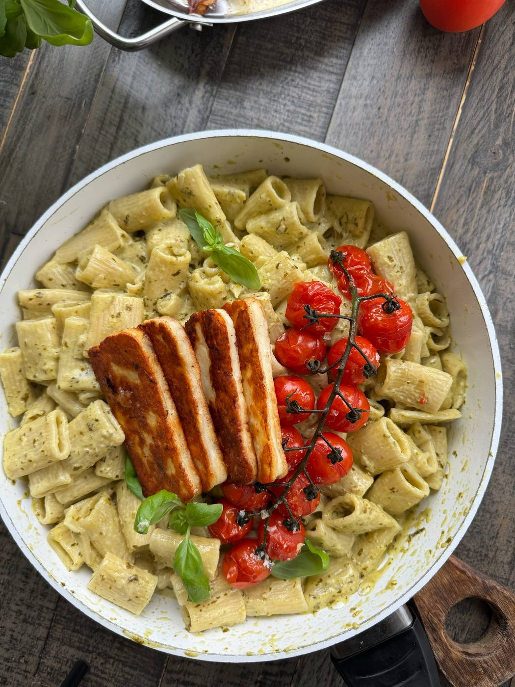
Pasta pesto med ugnsbakade tomater & stekt halloumi40 min · 4 portioner
En smakrik, krämig och färgsprakande pastarätt med pesto, ugnsbakade tomater och stekt halloumi.
Ingredienser
Ugnsbakade tomater
- 400g körsbärstomater
- 2 msk olivolja
- 1 tsk havssalt
- 1 krm svartpeppar
Såsen
- 1 gul lök
- 5 dl matgrädde
- 380g grön pesto
- 400g pasta
Topping
- 250g halloumi
- 1 knippe färsk basilika
- Nymalen svartpeppar
Tillagning
- Ugnsbaka tomater med olivolja och salt, 200°C i 15 min.
- Koka pasta enligt anvisning – spara pastavattnet.
- Fräs finhackad lök. Tillsätt grädde och låt puttra. Rör ner peston.
- Vänd ner pasta i såsen, tillsätt lite pastavatten vid behov.
- Stek halloumiskivor gyllene i torr panna.
- Toppa med tomater, halloumi, basilika och svartpeppar.
Tips
- Prova olika tomatfärger för vackrare presentation
- Pastavatten binder såsen perfekt
- Byt halloumi mot grillad zucchini för vegan
- Soltorkade tomater ger annan smakprofil
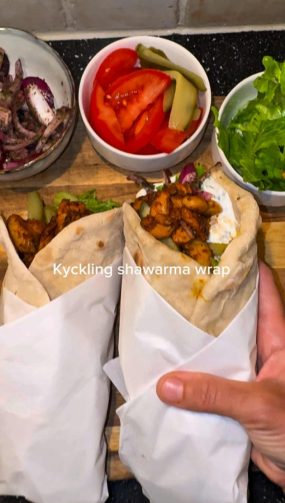
Kyckling Shawarma120 min · 5 portioner
Autentisk mellanöstern kyckling shawarma med hemmagjorda tunnbröd, kryddigt kött och fräscha tillbehör.
Ingredienser
Kycklingen
- 900g kycklinglårfilé
- 1 tsk spiskummin
- 1 tsk paprikapulver
- 1 tsk gurkmeja
- 1 tsk malen koriander
- 1 msk vitlökspulver
- 1 msk lökpulver
- 1 tsk cayennepeppar
- 1 tsk dragon
- 1 msk salt
- 1 tsk svartpeppar
- 1 msk tomatpuré
Vitlökssås
- 2,5 dl grekisk yoghurt
- 2 vitlöksklyftor (rivna)
- Mynta och persilja, finhackad
- 1 tsk limesaft
- Flingsalt
Löksallad
- 2 röda lökar
- 1 msk torkad persilja
- 1–2 tsk sumak
- 1 msk olivolja
- Flingsalt
Tunnbröd (ca 5 st)
- 5,5 dl vetemjöl
- 2,5 dl ljummet vatten
- 1 tsk salt
- 15g färsk jäst
Tillagning
Marinera
- Skär kycklingen i strimlor, blanda med alla kryddor och tomatpuré. Täck och ställ i kyl minst 1 timme.
Vitlökssås
- Blanda yoghurt, riven vitlök, örter och limesaft. Smaka av med salt.
Löksallad
- Skiva lök tunt. Blanda med persilja, sumak, olivolja och salt. Låt stå 10–15 min.
Tunnbröd
- Lös jäst i vatten, tillsätt mjöl och salt. Knåda 8–10 min, jäs 1 timme.
- Dela i 5 bitar, kavla tunt. Grädda i torr het panna ca 1 min per sida.
Tillaga & servera
- Stek kycklingen i het panna tills genomstekt.
- Bygg shawarma: kyckling + grönsaker + vitlökssås i tunnbröd.
Tips
- Marinera över natten för djupare smak
- Tunnbröden kan frysas
- Extra vitlökssås som dipp
- Prova att grilla kycklingen för rökig smak
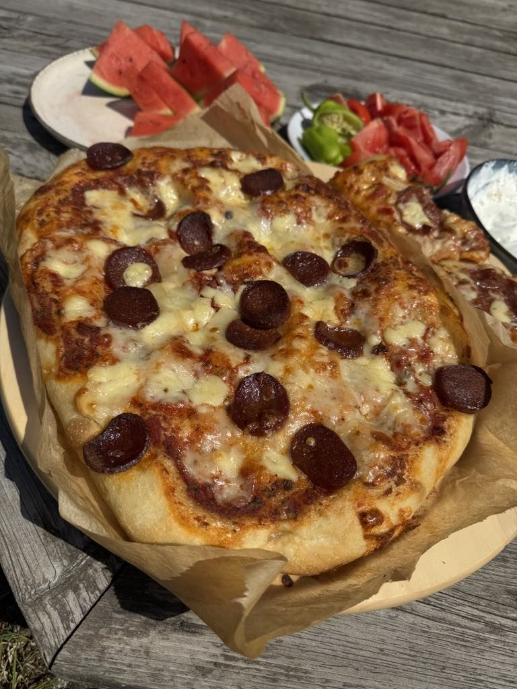
Snabba pannpizzor direkt i ugnsformen90 min · 4–6 portioner
Perfekt för kylskåpsrester! Enkel deg, valfria toppings – familjens favorit på nolltid.
Ingredienser
Pizzadeg
- 5 dl ljummet vatten
- 25g färsk jäst
- 2 tsk salt
- 2 msk olivolja
- ca 10–12 dl vetemjöl
Toppings
- Tomatsås
- Ost (mozzarella, cheddar)
- Kylskåpsrester (skinka, grönsaker, champinjoner)
- Örter (oregano, basilika)
Tillagning
- Lös jästen i vattnet. Tillsätt salt och olivolja.
- Arbeta in mjölet till en smidig lös deg. Jäs under duk 45–60 min.
- Dela i 2 bitar, lägg på ugnsform med bakplåtspapper och tryck ut med fingrar.
- Låt jäsa 20 min. Lägg på topping.
- Grädda 230°C i 15–20 min. Njut! 😊
Tips
- Perfekt för kylskåpsrester
- Degen kan göras dagen innan
- Prova oliver, paprika och champinjoner
- Kan frysas efter gräddning
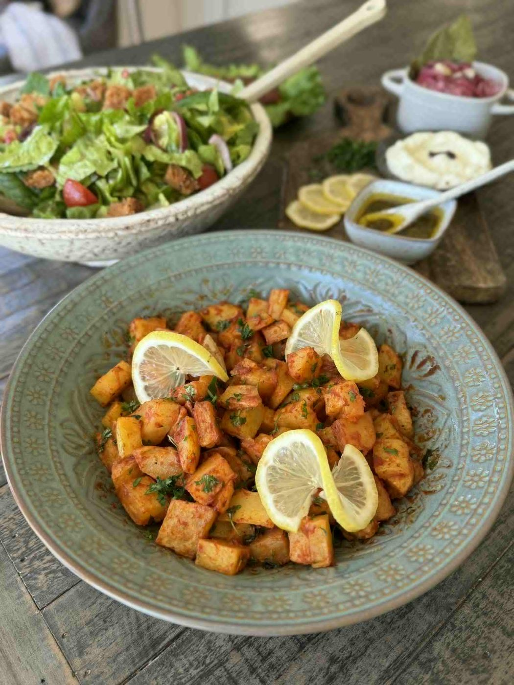
Batata Harra – Friterad potatis med tomatsås35 min · 4–6 portioner
Kryddig libanesisk rätt med krispig potatis och het tomatsås. Perfekt som meze eller tillbehör!
Ingredienser
Potatis
- 1 kg fast potatis
- Rapsolja till fritering
Tomatsås
- 1,5 msk tomatpuré
- 2 msk rapsolja
- 1 msk lökpulver
- ½ msk svartpeppar
- 1 dl vatten
- 1,5 tsk salt
- 1 vitlöksklyfta
- 1,5 tsk chiliflakes
- 1 msk paprikapulver
Topping
- Färsk persilja (finhackad)
- Färsk mynta (finhackad)
- Tajinkrydda efter smak
Tillagning
Fritera
- Skala och tärna potatisen. Blötlägg i kallt vatten 5 min, torka noga.
- Fritera tills gyllene och ca 80% klar. Lägg på papper.
Tomatsås
- Stek tomatpurén i olja. Häll i vatten, krydda med allt.
- Sjuda 1 min.
Slutför
- Vänd ner potatisen i såsen.
- Strö rikligt med persilja, mynta och tajinkrydda.
- Servera varm med libabröd och hummus.
Tips
- Torka potatisen noga för krispighet
- Fritera inte helt färdigt – klart 80%
- Tajinkrydda finns i mellanösternbutiker
- Supergott med hummus och bröd
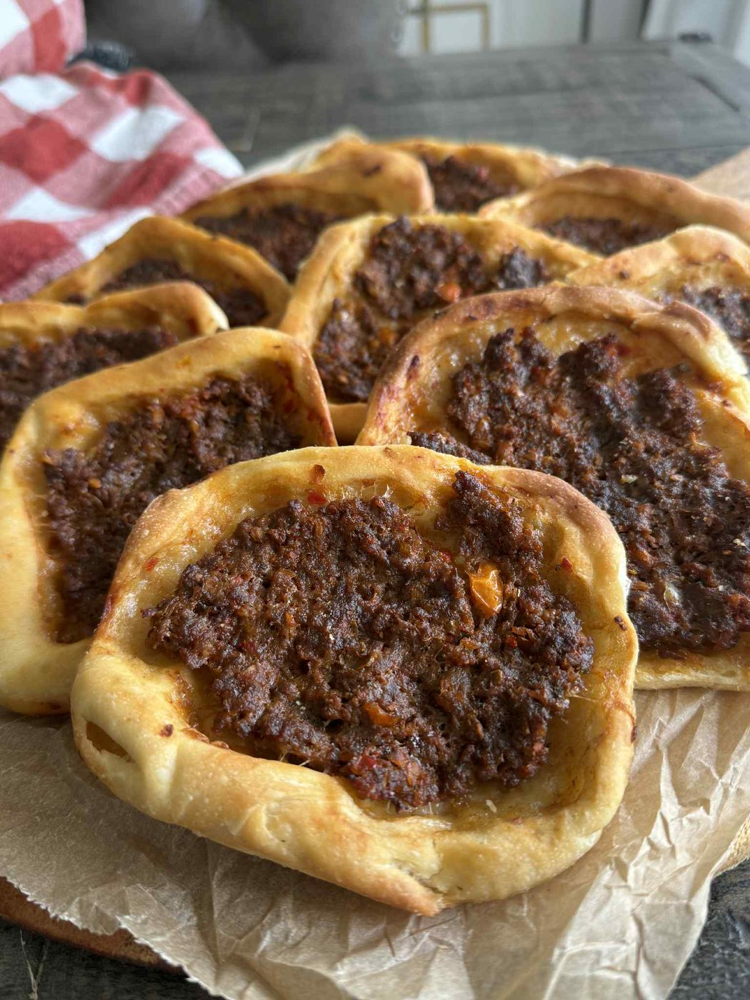
Mini Lahmacun – Perfekt mängd, noll svinn!75 min · 15 portioner
15 perfekta mini lahmacun. Frysvänliga, fyllda av smak och älskade av hela familjen!
Ingredienser
Degen (ca 15 st)
- 4 dl varmt vatten (40°C)
- 1 tsk torrjäst
- ½ dl rapsolja
- 2 tsk salt
- 7 dl vetemjöl
Köttfärsfyllning
- 1 gul lök
- 1 kvisttomat
- 1 röd spetspaprika
- 1 grön paprika (gärna sivri)
- 350g nötfärs (eller 50/50 nöt/lamm)
- 1 msk paprikapulver
- ½ tsk svartpeppar
Montering
Tillagning
Degen
- Blanda vatten, jäst och olja. Vänta 5 min. Tillsätt mjöl och salt.
- Knåda till smidig deg. Jäs 15 min under duk.
- Dela i 15 bitar och kavla ut tunna runda kakor.
Fyllning
- Mixa alla grönsaker till puré. Blanda med köttfärs och kryddor. Knåda väl. Ställ i kyl.
Gräddning
- Förvärm ugn till 250°C.
- Bred ut köttfärsen tunt på degkakorna.
- Grädda 8–10 min tills kanterna är gyllene.
- Servera direkt eller frys in.
Tips
- Frysvänliga – ta fram precis vad du behöver
- 50/50 nöt och lamm ger autentisk smak
- Sivri paprika är mild och perfekt
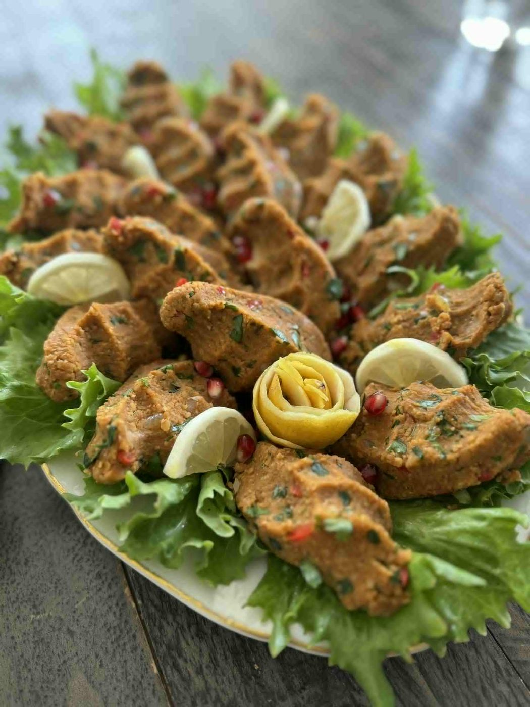
Lins- och bulgurjärpar med sumak och spetspaprika45 min · 4–6 portioner
Proteinrika vegetariska järpar med röda linser, bulgur och aromatiska kryddor från Mellanöstern.
Ingredienser
Huvudingredienser
- 1 liter vatten
- 3 dl röda linser
- 6 dl finmalen bulgur
- 1,5 gul lök, finhackad
- 2 röda spetspaprikor, finhackade
- 5–6 salladslökar, finhackade
- 0,5 dl rapsolja
- 1–1,5 msk tomatpuré
Kryddor
- 2,5 tsk salt
- 1 msk sumak
- 1 tsk svartpeppar
- 1 tsk garam masala
- 1 tsk cayennepeppar
Tillagning
Koka linser och bulgur
- Koka upp 1 liter vatten. Skölj linser och lägg i. Skumma.
- Koka ca 10 min tills gröna. Stäng av värmen.
- Skölj bulgur och rör ner. Låt svälla tills tjockt.
Grönsaksröran
- Finhacka lök, paprika och salladslök.
- Fräs gul lök i rapsolja tills mjuk.
- Tillsätt paprika och tomatpuré, fräs 2 min.
- Vänd ner salladslök och kryddor. Stek 5–7 min. Svalna.
Forma
- Blanda lins-bulgur och grönsaksröran.
- Tillsätt vatten om degen är torr – ska vara formbar.
- Forma till järpar eller bollar.
Tips
- Servera i libabröd med citron och sirap
- Sumak ger syrlig smak – finns i mellanösternbutiker
- Kan förberedas dagen innan
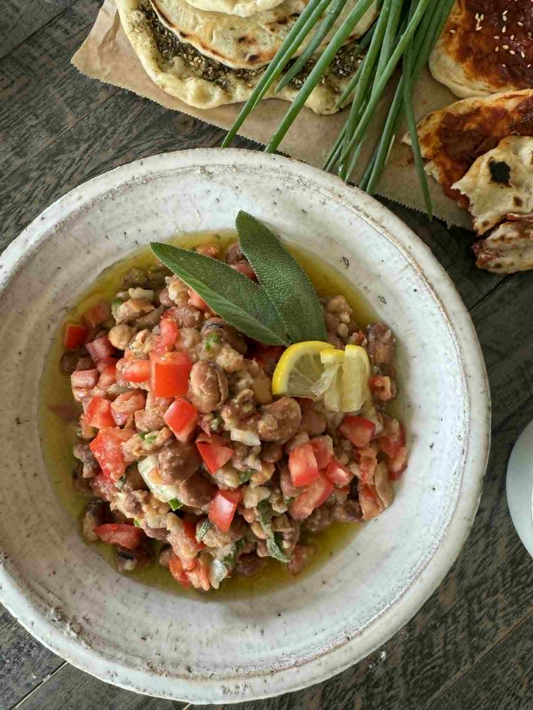
Kall foul medames15 min · 4 portioner
Fräsch och proteinrik sallad med kokta favabönor, färska örter och citron. Perfekt som meze eller lätt lunch!
Ingredienser
- 2 burkar kokta bruna bönor eller favabönor (à 400g)
- 2–3 vitlöksklyftor, finhackade
- 1 liten lök, finhackad
- 1 stor tomat, hackad
- 1 grön chili, finhackad
- 1 dl färsk persilja, grovhackad
- 2–3 msk färsk salvia, finhackad
- 2 msk färsk mynta, finhackad
- 1 citron, saften
- 0,5 dl olivolja
- Salt och svartpeppar
Tillagning
- Skölj bönorna noga och häll av vätskan.
- Lägg i skål och blanda med alla grönsaker.
- Ringla citron och olivolja.
- Krydda med örter, salt och peppar.
- Rör om och låt stå 5–10 min.
Tips
- Servera med libabröd
- Kan göras dagen innan
- Extra olivolja och citron vid servering
- Prova med feta eller tahini
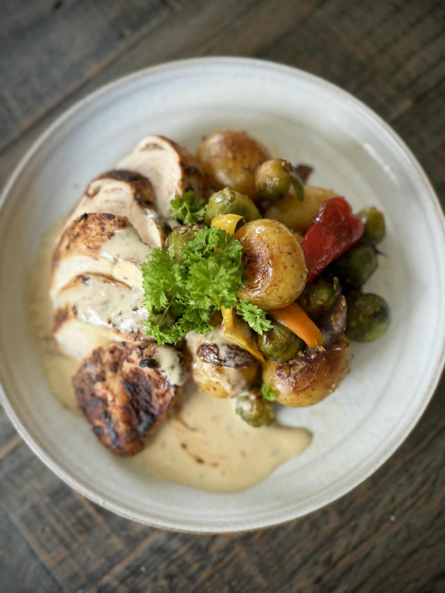
Stekt kycklingfilé med smörslungad potatis & dragonsås60 min · 3–4 portioner
Krämig dragonsås, saftig kyckling och smörstekta grönsaker – enkel men med känsla av vardagslyx.
Ingredienser
Kyckling
- 3 kycklingfiléer
- Salt och svartpeppar
- Smör och olja till stekning
- Färsk timjan eller rosmarin (valfritt)
Potatis & grönsaker
- 800g delikatesspotatis
- 1 röd, 1 gul, 1 orange paprika
- 1 stor rödlök
- Ca 300g brysselkål
- 50–75g smör
- Salt och svartpeppar
Dragonsås
- 2 dl vispgrädde
- 1 dl crème fraîche
- 1–2 tsk dijonsenap
- 1 tsk vitvinsvinäger
- 1–2 tsk torkad dragon
- Salt och svartpeppar
Tillagning
Kycklingen
- Förvärm ugn 150°C. Krydda filéerna. Bryn i smör+olja 2–3 min/sida.
- Lägg i ugnsform, tillsätt smör eller buljong. Tillaga till 70–72°C innetemperatur.
- Låt vila 5–10 min.
Potatis & grönsaker
- Koka potatis nästan klar. Halvera. Förkoka brysselkål 3 min.
- Stek potatis gyllenbrun. Tillsätt grönsaker, stek 10 min. Avsluta med smörklick.
Dragonsås
- Koka grädde och crème fraîche. Vispa ner senap, dragon och vinäger.
- Sjuda 5–10 min tills lätt tjocknat. Smaka av.
Servering
- Skär kycklingen i sneda skivor. Lägg på grönsaker och ringla sås.
Tips
- Kötttermometer ger perfekt resultat
- Dragonsåsen kan göras i förväg
- Zucchini och sparris passar också bra
Friterad kyckling med BBQ-glaze & vitlöksmajonnäs 😍🔥90 min · 4 portioner
Krispig friterad kyckling penslad med en kladdig BBQ- och ketchupglaze, och en snabb vitlöksmajonnäs till. Vår perfekta fredagsmiddag!
Ingredienser
Friterad kyckling
- 1 paket färska kycklingfiléer
- 4 dl grädde
- ½ dl soja
- 1 msk vitlökspulver
- 1 msk lökpulver
- 1 msk rökt paprikapulver
- ½ msk salt
- Svartpeppar
- 3 msk chilisås
Panering
- 5–6 dl vetemjöl
- 1 msk vitlökspulver
- 1 msk lökpulver
- 1 msk chicken cajun-krydda
- En nypa salt
- Svartpeppar
- Frityrolja
Vitlöksmajonnäs
- 1 dl majonnäs
- ½ tsk sesamolja
- 1 liten vitlöksklyfta, pressad
- En nypa cayennepeppar
- En nypa salt
BBQ- & ketchupglaze
- 1 dl ketchup
- ½ dl soja
- ½ dl valfri BBQ-sås
- Chili efter smak
- Lite färskpressad lime
Tillagning
Marinera kycklingen
- Skär kycklingfiléerna på mitten.
- Blanda grädde, soja, vitlökspulver, lökpulver, rökt paprikapulver, salt, svartpeppar och chilisås.
- Lägg ner kycklingen och blanda ordentligt så att alla bitar täcks.
- Täck över och låt marinera i kylen i cirka 1 timme.
Panera & fritera
- Blanda allt till paneringen i en skål.
- Ta kycklingen direkt från marinaden och vänd ordentligt i mjölblandningen. Tryck gärna in mjölet lite med händerna så får du en extra krispig och härlig yta.
- Lägg de panerade kycklingbitarna på en plåt medan du panerar resten.
- Hetta upp frityroljan till cirka 170–180°C och fritera kycklingen, gärna en bit åt gången, tills den är gyllene, krispig och helt genomstekt.
- Förvara den färdigfriterade kycklingen varmt i ugnen medan du gör resten.
Vitlöksmajonnäs
- Blanda ihop allt och smaka av. Enkelt och SÅ gott till kycklingen!
Glaze & servering
- Blanda ihop allt till glazen till en härligt kladdig sås.
- Pensla den varma, krispiga kycklingen ordentligt med BBQ-glazen precis innan servering.
Tips
- Tryck in mjölet med händerna – det ger en extra krispig yta
- Fritera gärna en bit i taget så håller oljan temperaturen
- Håll oljan på 170–180°C
- Håll den färdiga kycklingen varm i ugnen medan du friterar resten
- Pensla på glazen precis innan servering
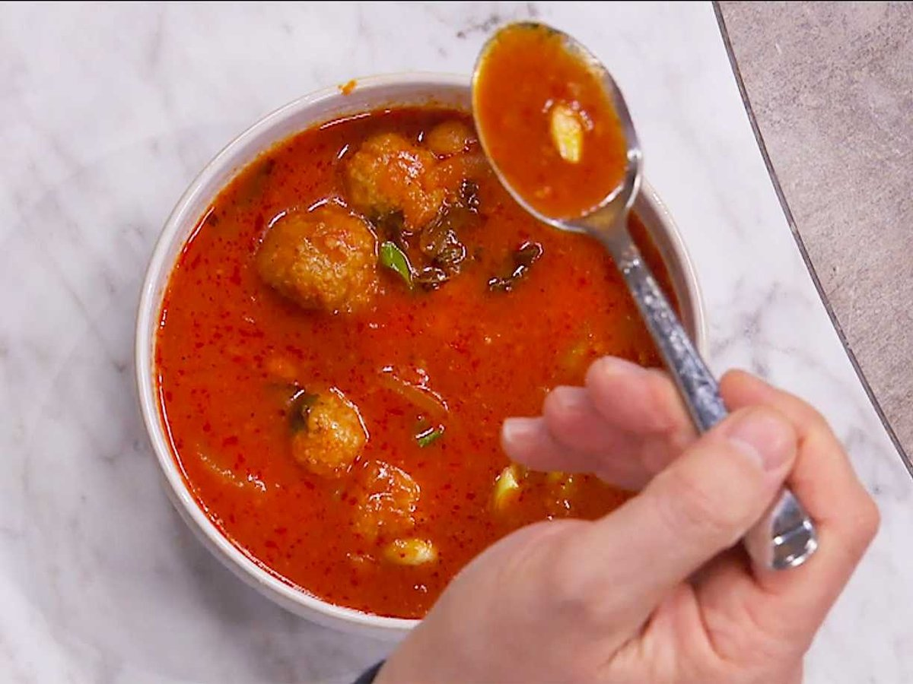
Humse qarhone60 min · 4 portioner
En otroligt god, smakrik och proteinrik assyrisk/syriansk kikärtsgryta med bulgurbollar.
Ingredienser
Bulgurbollar
- 2 dl bulgur, finmald
- 2 dl shiche, finmald
- Vatten
- 0,5 dl mannagryn
- 2 tsk salt
- 2 tsk svartpeppar
- 1 msk torkad mynta
Tomatsås
- 1 gul lök, finhackad
- 3–4 klyftor vitlök, finhackade
- 3–4 msk olivolja
- 1 msk tomatpuré
- Ca 1,5 l vatten
- 480 g kikärtor (i tetrapack)
- 0,5 msk citronpeppar
- 1 msk salt
- 1 msk paprikapulver
- 0,5 msk chiliflakes
Tillagning
Bulgurbollar
- Blanda bulgursorterna och häll över vatten tills det täcker. Låt vila 20 minuter under lock.
- Tillsätt mannagryn, salt, peppar och torkad mynta. Knåda tills degen håller ihop, tillsätt vatten gradvis.
- Forma små bollar med fuktiga händer.
Tomatsås
- Fräs lök och vitlök i olivolja.
- Tillsätt tomatpurén och stek några minuter.
- Häll i vatten och kryddor. Låt småkoka 10 minuter.
- Sila och häll ner kikärtorna.
- Tillsätt bulgurbollarna och låt småkoka 10 minuter.
- Justera vätska, salt och peppar efter behov.
Tips
- Servera med salladslök, mynta och pressad citron
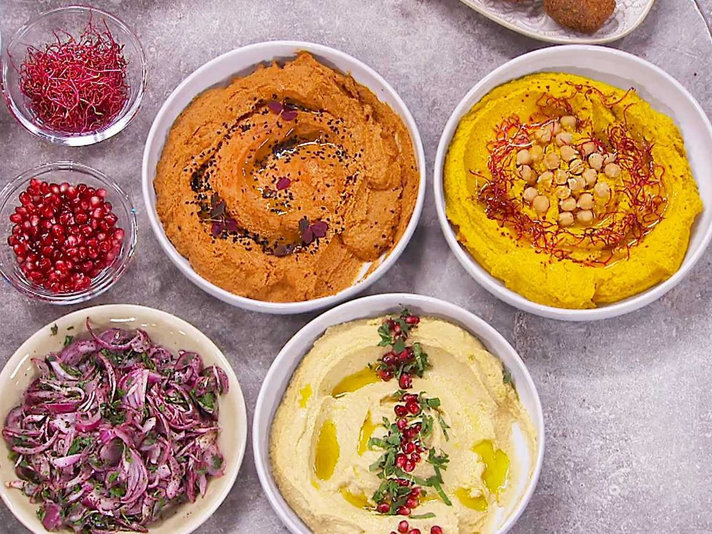
Hummus x 320 min · 4–6 portioner
Grundreceptet på min hummus, där kikärtornas karaktär får stå i rampljuset. Krämig, syrlig och supergod – plus två smaksättningar.
Ingredienser
Grundrecept
- 800 g kikärtor (i tetrapack)
- 3 vitlöksklyftor
- Saft från 2 citroner
- 0,5 msk salt
- 1 dl tahini/sesampasta
- 1 dl vatten
Smaksättning 1: paprika & harissa
- 1,5 msk paprikapuré
- 1 msk harissa
- Granatäppelkärnor
- Krasse
- Olivolja
Smaksättning 2: gurkmeja & koriander
- 2 msk malen gurkmeja
- 1 tsk malen spiskummin
- 1 tsk korianderfrön
- Olivolja
- Kikärtor
- Färsk mynta
Tillagning
Grundrecept
- Skölj och låt kikärtorna rinna av, mixa dem sedan släta.
- Tillsätt vitlöken och fortsätt mixa. Pressa i citronsaften, tillsätt salt och tahini. Tillsätt vattnet gradvis under mixning tills den blir krämig och binder ihop sig.
- Lägg upp på ett fat, ringla över olivolja och avsluta med chiliflakes och sumak.
Smaksättning 1
- Tillsätt 1,5 msk paprikapuré och 1 msk harissa till grundreceptet. Mixa en gång till.
- Toppa med olivolja, granatäppelkärnor och krasse.
Smaksättning 2
- Gör grundreceptet och tillsätt 2 msk gurkmeja, 1 tsk spiskummin och 1 tsk koriander. Mixa.
- Servera toppad med olivolja, kikärtor och färsk mynta.
Tips
- Gör grundreceptet först och dela sedan upp det om du vill göra flera smaker
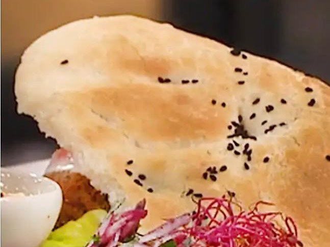
Lahmo do bayto
Mjukt hembakat bröd – assyriskt/syrianskt husets bröd. Mjuk, smidig deg som gräddas till gyllene, fluffiga bröd.
Ingredienser
Deg
- 50 g färsk jäst
- 8 dl fingervarmt vatten
- 1 msk salt
- ¾ dl rapsolja
- Ca 17–18 dl vetemjöl
Tillagning
Gör degen
- Smula jästen i en stor bunke och lös upp den i det fingervarma vattnet.
- Tillsätt salt och rapsolja.
- Arbeta in mjölet lite i taget. Börja med cirka 16 dl och tillsätt mer vid behov. Degen ska vara mjuk, smidig och gärna lite klibbig – undvik att tillsätta för mycket mjöl.
- Knåda degen ordentligt och låt den jäsa övertäckt tills den har ungefär dubblat sin storlek.
Forma och grädda
- Dela degen i lika stora bitar och forma dem till runda bröd. Ha lite olja på händerna och platta försiktigt till bröden.
- Lägg bröden på en plåt med bakplåtspapper och låt jäsa ytterligare 30 minuter.
- Grädda i 220°C varmluft i cirka 20 minuter, eller tills bröden har fått en fin gyllene färg.
Tips
- Degen ska vara lite klibbig – för mycket mjöl ger torrt bröd
- Olja på händerna gör det lätt att forma bröden
- Gräddas i 220°C varmluft, cirka 20 minuter